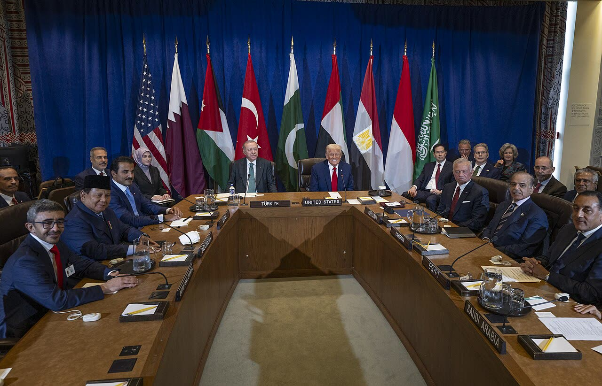

Erdoğan e il Qatar firmano un patto di difesa reciproca (testo non pubblicato)
Un patto di cui nessuno ha letto gli obblighi è un segnale politico, non uno scudo per Doha; e la Nato, per come è scritta, non c'entra.
Redazione Contrappunto · aggiornato il 14.11.2026 · 1 rettifiche

.jpg){kind=link}
Il 13 novembre 2026 la Turchia e il Qatar hanno firmato a Istanbul un «accordo di difesa reciproca», uno dei cinque documenti siglati durante il 12° incontro del loro Comitato strategico di alto livello, l'organo con cui i due governi coordinano la cooperazione (Anadolu). Il testo non è stato pubblicato. La Turchia ha già truppe in Qatar da anni ed è membro della Nato, l'alleanza militare occidentale; il Qatar no. L'accordo arriva mentre il Qatar è il principale mediatore tra Stati Uniti e Iran nella guerra che Washington e Israele hanno aperto contro Teheran il 28 febbraio 2026 (Reuters).
Vedi di più: 4 parole spiegate, cosa si racconta
Cosa si raccontaLa versione diffusa viene dalla presidenza turca: il patto «aggiungerà un'altra dimensione alla nostra fratellanza», i due paesi lavoreranno insieme per evitare che la guerra nel Golfo riprenda (comunicato della presidenza, riportato da Reuters, Dawn, Anadolu). Al Jazeera, finanziata dallo Stato del Qatar, e Middle East Eye danno la stessa notizia; Middle East Eye aggiunge che il patto obbliga ciascuno a difendere l'altro, senza citare il testo. Nessuna testata che abbiamo letto lo ha visto. [Anadolu Agency] [The Jerusalem Post] [Dawn] [Al Jazeera] [Middle East Eye]
- Comitato strategico di alto livello
- Il vertice periodico tra i governi di Turchia e Qatar, presieduto dai due leader; quello di oggi era il dodicesimo, al palazzo di Dolmabahçe a Istanbul (Anadolu).
- Difesa reciproca
- Un patto in cui ciascun firmatario promette di aiutare l'altro se attaccato. Quanto sia vincolante dipende dal testo: può essere un impegno automatico o solo di consultazione e aiuto «per quanto possibile». Qui il testo non è noto.
- Articolo 5 della Nato
- La clausola per cui un attacco armato a un alleato in Europa o Nord America è un attacco a tutti; ogni alleato aiuta con le azioni che ritiene necessarie (Trattato del Nord Atlantico, art. 5 e 6).
- Accordo di Mecca
- Il patto firmato in agosto 2026 da Turchia, Arabia Saudita e Pakistan, per cui un attacco a uno è un attacco a tutti; il parlamento turco lo ha ratificato la settimana scorsa (Dawn, Jerusalem Post).
- Turchia e Qatar hanno firmato il 13 novembre a Istanbul un patto di difesa reciproca; a firmarlo sono stati Erdoğan e l'emiro Tamim, ma né il testo né gli obblighi sono pubblici (Anadolu, Dawn, Reuters).
- La Turchia ha truppe in Qatar da anni; la Nato non ha obblighi verso il Qatar, che non è nel suo territorio di difesa (Trattato del Nord Atlantico).
- Il patto arriva con la guerra all'Iran in corso e il Qatar mediatore: Doha cerca garanzie oltre quelle americane, secondo un analista citato da Al Jazeera.
Le testate raccontano la firma e nient'altro: Anadolu elenca i firmatari; Reuters (ripresa da Jerusalem Post e Dawn) e Al Jazeera citano la presidenza turca, senza dettagli. Il racconto regge a metà: Middle East Eye scrive che il patto obbliga i due paesi a difendersi, ma nessuno ha visto il testo. Per la Nato, l'articolo 5 riguarda l'Europa, il Nord America e il territorio turco, non Doha né le truppe turche lì: il Qatar non è coperto. Per noi, finché il testo resta riservato, è un segnale politico, non una garanzia. L'Italia ha interesse che la mediazione del Qatar sull'Iran riesca, non che nasca un altro blocco armato nel Golfo. [1] [3] [4] [2] [5] [8]
La verifica punto per punto7 passaggi, 14 fonti
Qui sotto ogni cosa scritta sopra, una per una, con le fonti. Confermato: lo dice un documento originale o più fonti lette. Plausibile: lo riportano fonti serie, ma non abbiamo letto l'originale. Discordante: le fonti danno numeri diversi, e diciamo quali. Ipotesi e Opinione sono il nostro ragionamento, separato dai fatti.
Il patto
Il 13 novembre 2026 Turchia e Qatar hanno firmato cinque accordi a Istanbul, al palazzo di Dolmabahçe, durante il 12° Comitato strategico di alto livello. L'accordo di difesa reciproca è stato firmato dal presidente Recep Tayyip Erdoğan e dall'emiro Tamim bin Hamad Al Thani; gli altri quattro dai ministri: un memorandum su tutela dei consumatori e controlli di mercato, un accordo sull'istruzione, un memorandum sulla cooperazione in pace, riconciliazione e risoluzione dei conflitti, e la dichiarazione congiunta dell'incontro, firmata dai ministri degli Esteri Hakan Fidan e Mohammed bin Abdulrahman Al Thani (Anadolu).
Il testo non c'è
La presidenza turca non ha dato dettagli sul contenuto del patto: Reuters, Dawn e Al Jazeera lo scrivono espressamente. Resta la frase di Erdoğan, riportata dalla presidenza. Solo Middle East Eye scrive che il nuovo accordo obbliga i due paesi a difendersi a vicenda, senza citare il testo né una fonte: per noi è non verificabile. Quanto sia vincolante il patto non si sa.
La base turca e la Nato
Turchia e Qatar hanno accordi militari dal 2007 e 2012; nel dicembre 2014 il Qatar ha consentito il dispiegamento di forze turche sul suo territorio (AGSI, 2016). Nel 2015 il parlamento turco ha approvato l'accordo di cooperazione militare e si prevedevano circa 3.000 soldati turchi in Qatar; Middle East Eye scriveva nel 2016 che Ankara avrebbe preso un impegno segreto a proteggere il Qatar, di cui riferiva solo la rivista Intelligence Online, e che nell'accordo firmato a dicembre 2015 non c'era. Oggi Middle East Eye ricorda accordi «dal 2017», compreso lo stazionamento di truppe turche a Doha. Quanto alla Nato: l'articolo 5 considera un attacco armato contro un alleato «in Europa o Nord America» come un attacco a tutti, e l'articolo 6 lo estende al territorio della Turchia e alle forze degli alleati in quelle aree. Il Qatar non vi rientra, né le truppe turche che sono lì (Trattato del Nord Atlantico). Nessuna testata letta commenta questo punto per il nuovo patto.
Perché ora
La guerra contro l'Iran, lanciata da Stati Uniti e Israele il 28 febbraio, dura da oltre otto mesi e ha portato attacchi iraniani contro paesi arabi del Golfo (Reuters, 9 novembre). Il Qatar è il principale mediatore tra Washington e Tehran: il suo primo ministro Mohammed bin Abdulrahman Al Thani ha incontrato Trump e Vance a Washington e ha detto ai ministri del G7 di aver ottenuto «almeno due settimane» per evitare un attacco americano, secondo fonti diplomatiche del Jerusalem Post. Il 4 marzo l'Iran aveva detto al Qatar che i missili lanciati sul paese miravano solo a interessi americani (Reuters). Erdoğan ha detto che i due paesi lavoreranno insieme per evitare che la guerra nel Golfo riprenda. Ad agosto la Turchia ha firmato con Arabia Saudita e Pakistan l'Accordo di Mecca, ratificato dal parlamento turco la settimana scorsa. Per Yusuf Alabarda, analista di sicurezza, tutti i paesi del Golfo, e il Qatar più degli altri, hanno capito che le garanzie americane «non funzionano bene» e a breve armi e difese aeree turche potrebbero essere inviate a Doha.
Tra le righe
Il patto conta di più come segnale che come garanzia militare, finché gli obblighi non si conoscono.
Ragionamento: La presidenza non ha pubblicato il testo; per l'Accordo di Mecca, già dichiarato come «attacco a uno è attacco a tutti», un'analisi (The Conversation) osserva che il comunicato non spiega cosa ogni paese debba fare, e Middle East Eye nel 2016 riportava il parere di un esperto turco per cui un impegno di difesa potrebbe essere riservato e «qualificato», cioè non incondizionato. Per questo, senza il testo, non si può escludere né un impegno pieno né uno di sola consultazione.
Per l'Italia e l'Europa, in caso di attacco a truppe turche in Qatar, la Nato non scatterebbe da sola: la Turchia potrebbe chiedere consultazioni tra gli alleati, ma obblighi di intervento non ci sono.
Ragionamento: Gli articoli 5 e 6 coprono Europa, Nord America e territorio turco, non il Golfo; a marzo, dopo il missile iraniano abbattuto verso la Turchia, il segretario generale Rutte ha detto «Nobody's talking about Article 5» (Reuters). L'articolo 4 prevede invece consultazioni tra gli alleati quando uno di loro ritiene minacciata la propria sicurezza (Reuters, 4 marzo).
Il nostro punto
Un patto di difesa senza testo pubblicato è un annuncio, non una garanzia: il Qatar compra un'assicurazione che nessuno ha letto, e la Turchia aggiunge un impegno in più oltre a quello con la Nato e quello di Mecca. Per l'Italia e l'Europa, interesse prima di tutto: formalmente cambia poco, perché la Nato non è obbligata a difendere né il Qatar né le truppe turche, ma ogni blocco armato nel Golfo rende più incerta una guerra che ha già causato una crisi di energia mondiale. Meglio che Roma e Bruxelles sostengano la mediazione del Qatar tra Stati Uniti e Iran, e parlino con Ankara e Doha direttamente, senza lasciare tutto a Washington. Chi firma patti segreti dovrebbe pubblicarli: lo chiederemmo a Ankara come a chiunque.
Fonti14, tutte con il link
- Türkiye, Qatar sign 5 agreements, including mutual defense pact (13 novembre 2026) (Anadolu Agency) · consultata il 13.11.2026
- Turkiye and Qatar sign mutual defence agreement (13 novembre 2026) (Al Jazeera) · consultata il 13.11.2026
- Turkey, Qatar sign mutual defense agreement, Turkish presidency says (Reuters, 13 novembre 2026) (The Jerusalem Post) · consultata il 13.11.2026
- Turkiye, Qatar sign defence agreement: Turkish presidency (AFP e Reuters, 13 novembre 2026) (Dawn) · consultata il 13.11.2026
- Turkey and Qatar sign mutual defence agreement (13 novembre 2026) (Middle East Eye) · consultata il 13.11.2026
- Revealed: Secret details of Turkey's new military pact with Qatar (27 gennaio 2016) (Middle East Eye) · consultata il 13.11.2026
- Feyza Gumusluoglu, Why Qatar is Hosting a Turkish Military Base (15 aprile 2016) (Arab Gulf States Institute in Washington) · consultata il 13.11.2026
- The North Atlantic Treaty, Washington D.C., 4 aprile 1949, articoli 4, 5 e 6 (NATO) · consultata il 13.11.2026
- Trump to meet Qatar PM amid doubts over chance of Iran peace deal (Reuters, 9 novembre 2026) (Khaleej Times (dispaccio Reuters)) · consultata il 13.11.2026
- Qatar PM warns of major US-Iran disagreements despite reprieve (10 novembre 2026) (The Jerusalem Post) · consultata il 13.11.2026
- Turkey says NATO defences destroyed Iran missile, risking war expansion (Reuters, 4 marzo 2026) (Reuters (ripresa da Yahoo News)) · consultata il 13.11.2026
- Exclusive-No talk of triggering NATO's Article 5 over Turkey missile shoot-down, Rutte says (Reuters, 5 marzo 2026) (Reuters (ripresa da Yahoo News)) · consultata il 13.11.2026
- A new 'NATO of the East?' Why the Mecca pact isn't quite what it seems (16 agosto 2026) (The Conversation) · consultata il 13.11.2026
- Qatar and Turkiye sign a mutual defence pact: What do we know? (14 novembre 2026; archivio df56af49dc967) (Al Jazeera) · consultata il 14.11.2026
- 14.11.2026: Aggiornamento del 14 novembre: dopo la firma è uscito un comunicato congiunto, diffuso dal ministero degli Esteri del Qatar (riportato da Dawn con AFP e Reuters, e da Al Jazeera con Anadolu). Dice che l'accordo punta a rafforzare la difesa collettiva e a presentare «una posizione unita» contro un attacco armato esterno a uno o a entrambi i paesi, con consultazioni sulle minacce e più esercitazioni, industria della difesa e formazione. Il testo dell'accordo resta non pubblicato e, secondo Al Jazeera, il comunicato non dice cosa farebbe scattare il patto né quale risposta comune prevederebbe: per questo il titolo e la conclusione del pezzo restano validi. Il pezzo non è stato riscritto; Dawn è stato riletto nella versione aggiornata.
Testo preparato con strumenti di intelligenza artificiale e pubblicato senza revisione umana. Come lavoriamo